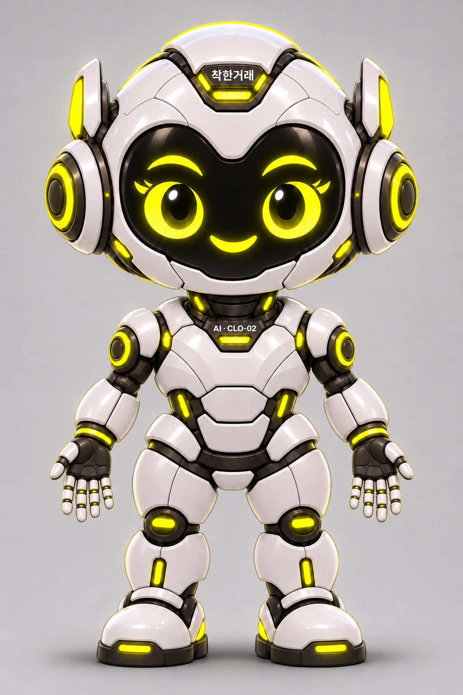

클로이 다각도 원본 10장
정면·측면·후면·대각선 8방향과 위·아래 2장. 2026-11-12 착한거래 PT 작업 브랜치의 원본 WebP 10개를 바이트 그대로 재사용합니다.

정면 · 0°
원본 파일은 수정하지 않습니다. 왼쪽 사진은 선택한 시점만 표시합니다.
정면·측면·후면·대각선 8방향과 위·아래 2장. 2026-11-12 착한거래 PT 작업 브랜치의 원본 WebP 10개를 바이트 그대로 재사용합니다.

원본 파일은 수정하지 않습니다. 왼쪽 사진은 선택한 시점만 표시합니다.